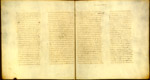

Bijbel (deel van het Oude Testament). Grieks. Handschrift op perkament, 130 ff., 245 x 225 mm. Egypte(?), vijfde eeuw. -- (VGQ 8)
Tot de vroege Griekse bijbelhandschriften behoort de ‘Codex Sarravianus’, zoals dit handschrift naar zijn eerste bekende bezitter, Claudius Sarravius (gestorven in 1651), genoemd wordt. Als geen ander Leids handschrift drukt het door zijn formaat, kalligrafisch schrift en ragdunne perkament de triomf van de codex over de rol uit. Tevens laat het door de vierkante verhoudingen van het blad en de indeling in twee kolommen zien hoezeer de vorm nog door de rol bepaald werd, dit ondanks het feit dat de bladen nu, ter wille van een goede conservering, met wit papier doorschoten zijn.
De resten van het handschrift zijn over drie bibliotheken verspreid. Eén blad berust in Leningrad, tweeëntwintig zijn er in Parijs; Leiden bezit veruit de meeste bladen. Het handschrift ligt open bij het boek Numeri (folia 44v-45r).
Literatuur
- K.A. de Meyïer, Codices Vossiani Graeci et Miscellanei. Lugduni Batavorum 1955 ( = Bibliotheca Universitatis Leidensis, Codices manuscripti. VI), p. 102-104.
- Facsimile: Vetus Testamentum Graece [...] praefatus est Henricus Omont. Lugduni Batavorum 1897 (= Codices Graeci et Latini photographice depicti. Vol. I).
| vorige pagina | top pagina |